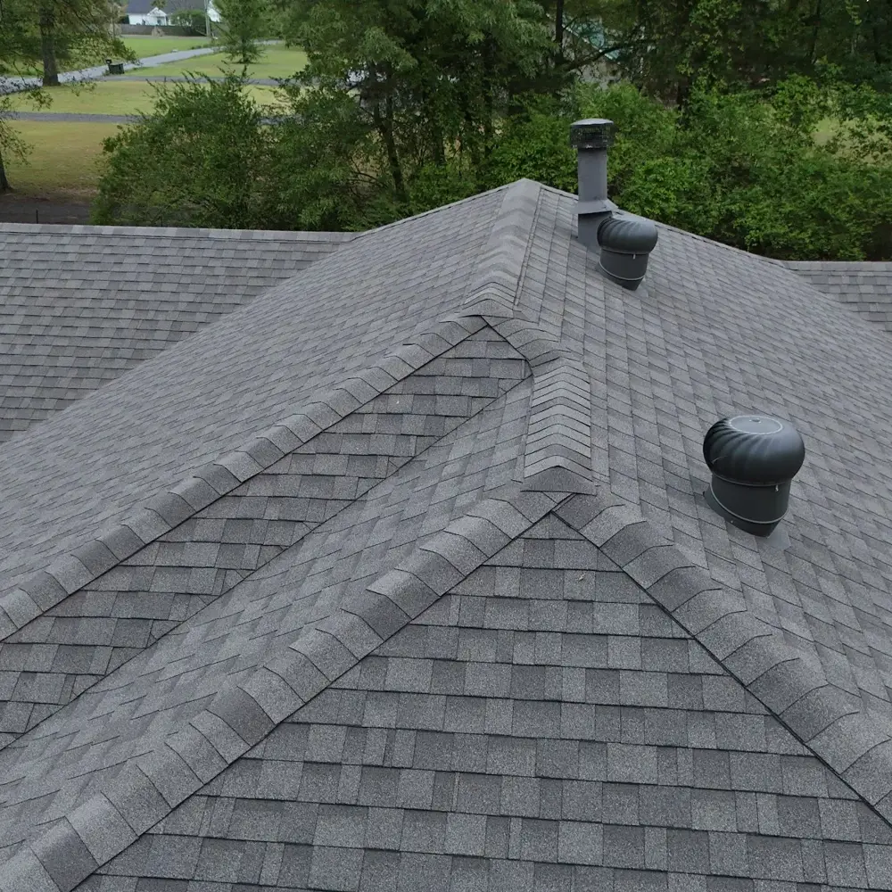
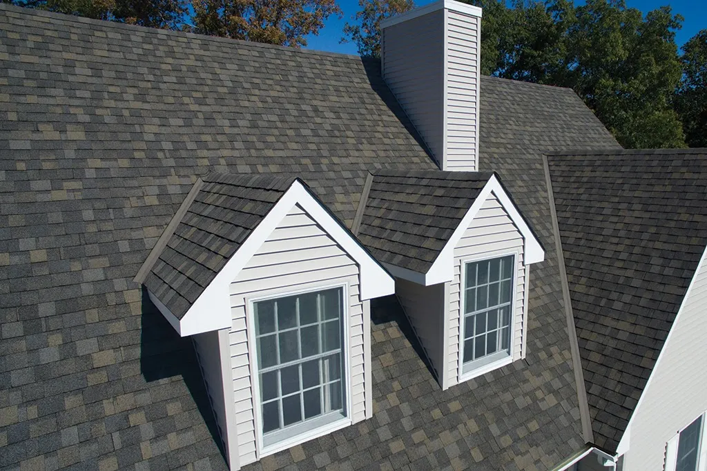

Roof replacement
When your roof is beyond repair, a full replacement is the best way to protect your home. It uses durable materials and proven installation methods so the new roof lasts for decades.
Read about roof replacementCabot, Little Rock and all of Central Arkansas
Shingle and metal roof replacement from a locally owned, family-operated Arkansas roofing company. Call for a free, no-pressure estimate.

Locally owned & operatedFamily-operated. Our family has lived in Central Arkansas since 1984.
Licensed & fully insuredPeace of mind on every roof.
Free, no-pressure estimatesCall or email to get yours.
Experienced with Arkansas weatherStorms, hail and wind are part of the job.
Roof replacement, storm damage repair, residential roofing and inspections for homeowners across Arkansas.

When your roof is beyond repair, a full replacement is the best way to protect your home. It uses durable materials and proven installation methods so the new roof lasts for decades.
Read about roof replacement
Arkansas storms can bring heavy rain, wind and hail, leaving your roof vulnerable. The team can also help with insurance claims.
Read about storm damage repair
Your home deserves the best protection. Affordable, high-quality residential roofing from new installations to leak repairs.
Read about residential roofing
Prevent costly repairs with a professional roof inspection. The team checks for leaks, damaged shingles and weak spots.
Read about roof inspections and maintenanceStorm damage
Arkansas storms can bring heavy rain, wind and hail. The team handles storm damage repair and can help with insurance claims.
Nine five-star reviews from Arkansas homeowners.
“This company did a great job and was quite a bit cheaper than all the other quotes I got. I would recommend this company to anyone. Give them a try.”
“From time of estimate to repair was so fast!! Fixed my roof between storms and did an excellent job! Professional, kind and very responsive to texts! I highly recommend Peak to Peak roofing!!”
“Did a really nice job installing the metal roof. During the installation process they kept me apprised of what was going on and I had daily contact with the owner. The process was quick and easy and the job was completed ahead of schedule. After job completion they did a good job cleaning up the site. All employees were courteous and cleaned up after themselves. If I had to do it again, I would go with peak 2 peak and recommend them to anyone else that needs a roof installation.”
Proudly serving these 21 cities and towns.
Call or send a request. Estimates and inspections are free and no-pressure.